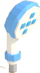

Hold


1,240
Step 1 of 4 · Scrub the mud
Step 2 of 4 · Pick out the burrs
Step 4 of 4 · Trim the claws
Step 1 of 4 · Scrub the mud
Step 3 of 4 · Rinse the suds
Awesome!x12
Nice pick!x3
Awesome!x12
So fresh!x5
Steady...
Rub the mud off
Drag each burr away
Hold on the paw